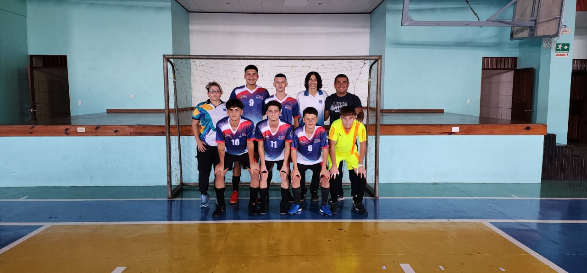

Futbol 5 adaptado para ciegos
Historia del Deporte
El fútbol 5 para ciegos comenzó a practicarse informalmente en Brasil y España en la década de 1930. En 1996, fue reconocido oficialmente como deporte paralímpico por la Federación Internacional de Deportes para Ciegos. Desde entonces, ha crecido en popularidad y se ha extendido a muchos países alrededor del mundo.
Reglamento Básico
Las reglas del fútbol 5 para ciegos son una adaptación de las reglas de la FIFA para el futsal, con modificaciones específicas para jugadores con discapacidad visual. Cada equipo está compuesto por cuatro jugadores ciegos o con discapacidad visual severa, que deben usar cubre ojos, y un portero vidente. Además, hay un “llamador” detrás del arco contrario que orienta a los jugadores. El público debe permanecer en silencio durante el juego para que los jugadores puedan orientarse mediante el sonido de la pelota.
Implementos Necesarios
• Pelota sonora: Una pelota de cuero con cascabeles en su interior para que los jugadores puedan localizarla mediante el sonido.
•Cubre ojos: Para asegurar la igualdad entre los jugadores y proteger la visión residual.
•Canilleras y espinilleras: Para la protección física de los jugadores.
Área de Juego
El campo de juego es un rectángulo de 40 metros de largo por 20 metros de ancho, con vallas laterales de aproximadamente 1 metro de altura para evitar que la pelota salga del terreno. La cancha está dividida en tres tercios: ofensivo, medio y defensivo.
Beneficios de su Práctica
La práctica del fútbol adaptado para ciegos ofrece numerosos beneficios, incluyendo:
• Mejora de la condición física: Aumenta la resistencia, la fuerza y la coordinación.
• Desarrollo de habilidades sociales: Fomenta el trabajo en equipo y la comunicación.
• Incremento de la autoestima: Proporciona un sentido de logro y pertenencia
Torneos Internacionales
El fútbol 5 para ciegos se juega en varios torneos internacionales, incluyendo los Juegos Paralímpicos, donde ha sido una disciplina oficial desde 2004. Otros torneos importantes incluyen el Campeonato Mundial de Fútbol para Ciegos y los Juegos Parapanamericanos.
VIVA EL SINAÍ
EL MEJO DE TODOS
DE PUNTILLAS LA PROFE JAJA

NECESITO EL 100 PROFE